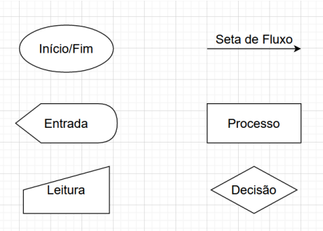

Marcos Vinícius Nunes Reis - AI-APW-01
Um fluxograma é uma forma gráfica de representar um algoritmo que facilita sua visualização e compreensão. O fluxograma utiliza formas geométricas, sendo assim considerado uma forma de representação universal. Essas figuras geométricas apresentarão as etapas para serem desempenhadas quando o algoritmo for executado.
Segue então, alguns exemplos de representações em formas no fluxograma. O Início e o Fim são representados em forma de elipse, e serão situados no começo e no final do fluxograma, respectivamente. Um fluxograma só pode conter um início, mas pode haver mais de um fim. A Leitura, em forma de trapézio isósceles, é a representação das entradas do algoritmo que terão seus dados digitados interpretados pelo programa. A Escrita, representada pela forma quase retangular com uma extremidade de triângulo e outra de meio círculo, é a parte em que o programa irá apresentar alguma informação à tela. As Setas de Fluxo, obviamente representadas por setas, são o caminho que o programa irá seguir em sua execução. O Processo, em retângulo, é a etapa em que o programa irá processar algo. E também, a Decisão, em forma de losango, que dividirá o fluxograma em duas partes. Ela sempre deve conter uma pergunta em que, dependendo das resposta, irá seguir em um dos dois caminhos.
Pelas ferramentas apresentadas no material, eu gostei mais da diagrams.net, porque eu mesmo já usei antigamente e estou familiarizado com sua interface, acho ela bem acessível e fácil de entender e possui boas opções de customização.

Legendas das formas geométricas de um fluxograma criado pelo diagrams.net